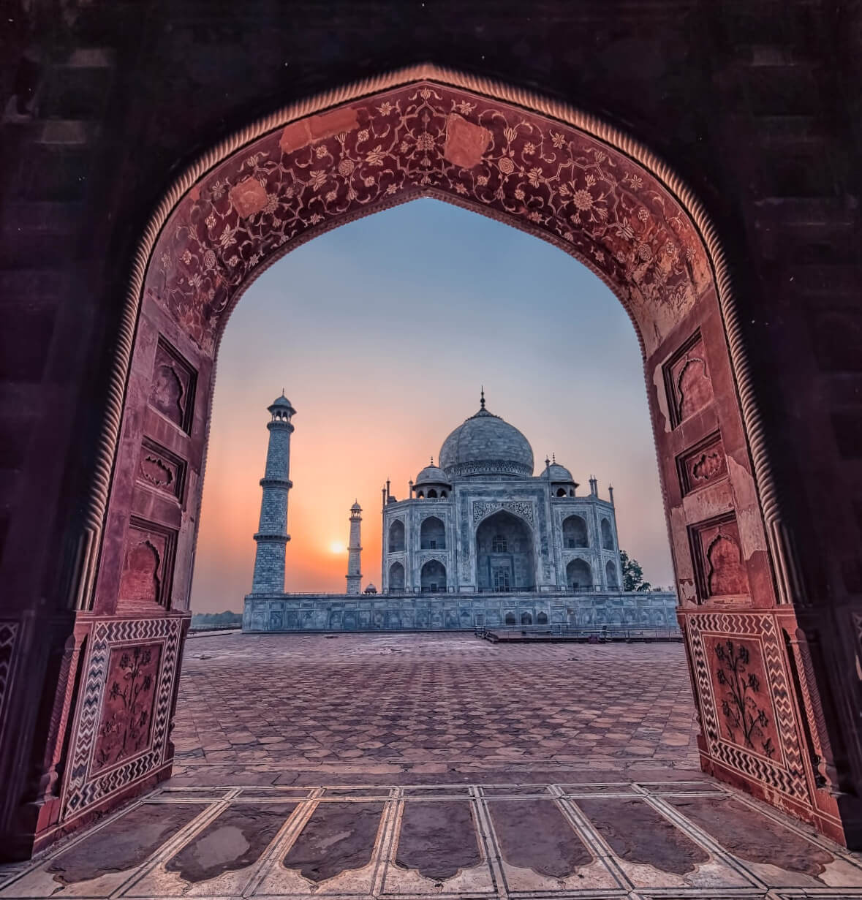
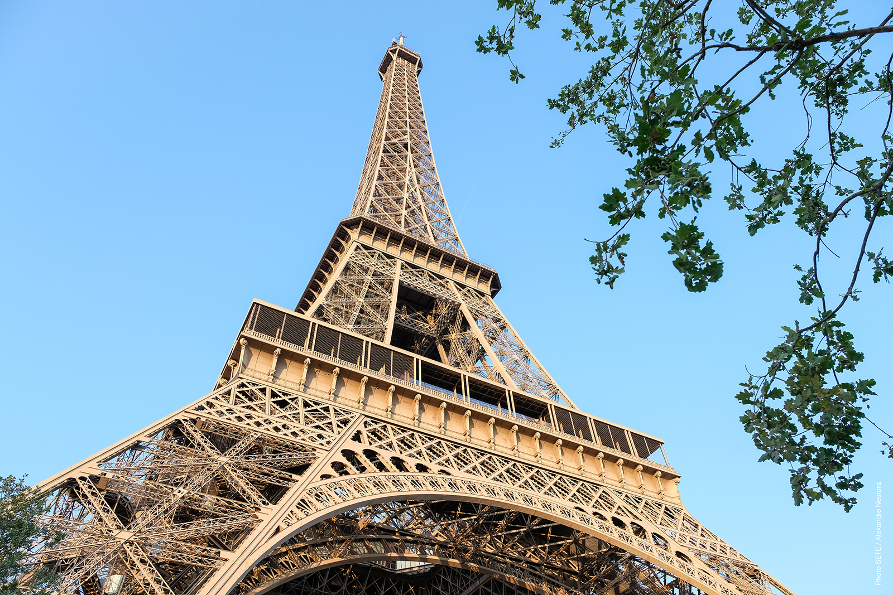

TAJ MAHAL


EIFFEL TOWER


Taj Mahal
An immense mausoleum of white marble, built in Agra between 1631 and 1648 by order of the Mughal emperor Shah Jahan in memory of his favourite wife, the Taj Mahal is the jewel of Muslim art in India and one of the universally admired masterpieces of the world's heritage.
The Taj Mahal is an ivory-white marble mausoleum on the southern bank of the river Yamuna in the Indian city of Agra. It was commissioned in 1632 by the Mughal emperor Shah Jahan (reigned from 1628 to 1658) to house the tomb of his favourite wife, Mumtaz Mahal; it also houses the tomb of Shah Jahan himself. The tomb is the centrepiece of a 17-hectare (42-acre) complex, which includes a mosque and a guest house, and is set in formal gardens bounded on three sides by a crenellated wall.
The Taj Mahal was designated as a UNESCO World Heritage Site in 1983 for being "the jewel of Muslim art in India and one of the universally admired masterpieces of the world's heritage". It is regarded by many as the best example of Mughal architecture and a symbol of India's rich history. The Taj Mahal attracts 7–8 million visitors a year and in 2007, it was declared a winner of the New 7 Wonders of the World (2000–2007) initiative.
History
The plans for the complex have been attributed to various architects of the period, though the chief architect was probably Ustad Aḥmad Lahawrī, an Indian of Persian descent. The five principal elements of the complex—main gateway, garden, mosque, jawāb (literally “answer”; a building mirroring the mosque), and mausoleum (including its four minarets)—were conceived and designed as a unified entity according to the tenets of Mughal building practice, which allowed no subsequent addition or alteration. Building commenced about 1632. More than 20,000 workers were employed from India, Persia, the Ottoman Empire, and Europe to complete the mausoleum itself by about 1638–39; the adjunct buildings were finished by 1643, and decoration work continued until at least 1647. In total, construction of the 42-acre (17-hectare) complex spanned 22 years.A tradition relates that Shah Jahān originally intended to build another mausoleum across the river to house his own remains. That structure was to have been constructed of black marble, and it was to have been connected by a bridge to the Taj Mahal. He was deposed in 1658 by his son Aurangzeb, however, and was imprisoned for the rest of his life in Agra Fort.
Design and Construction
Named the Taj Mahal in honor of Mumtaz Mahal, the mausoleum was constructed of white marble inlaid with semi-precious stones (including jade, crystal, lapis lazuli, amethyst and turquoise) forming intricate designs in a technique known as pietra dura.Its central dome reaches a height of 240 feet (73 meters) and is surrounded by four smaller domes; four slender towers, or minarets, stood at the corners. In accordance with the traditions of Islam, verses from the Quran were inscribed in calligraphy on the arched entrances to the mausoleum, in addition to numerous other sections of the complex.
Inside the mausoleum, an octagonal marble chamber adorned with carvings and semi-precious stones housed the cenotaph, or false tomb, of Mumtaz Mahal. The real sarcophagus containing her actual remains lay below, at garden level.
The rest of the Taj Mahal complex included a main gateway of red sandstone and a square garden divided into quarters by long pools of water, as well as a red sandstone mosque and an identical building called a jawab (or “mirror”) directly across from the mosque. Traditional Mughal building practice would allow no future alterations to be made to the complex.